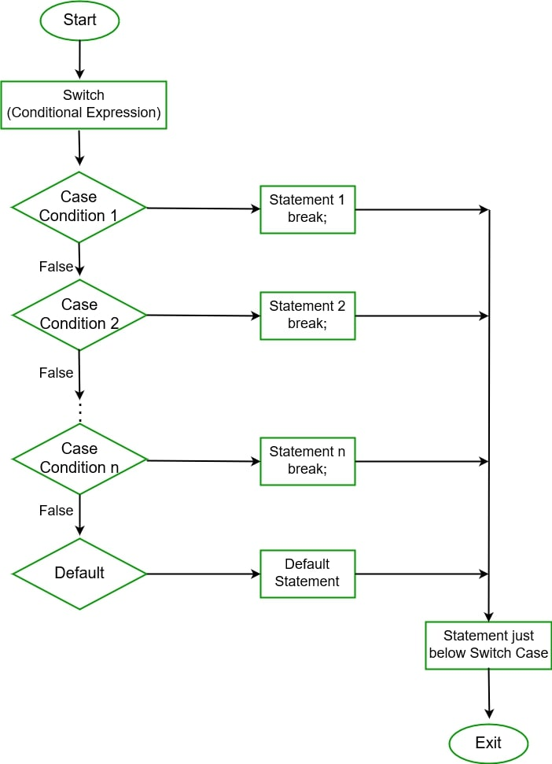
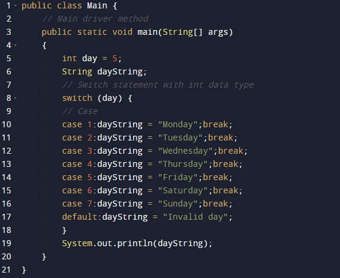

The switch statement is a multi-way branch statement. In simple words, the Java switch statement executes one statement from multiple conditions. It is like an if-else-if ladder statement. It provides an easy way to dispatch execution to different parts of code based on the value of the expression. Basically, the expression can be a byte, short, char, and int primitive data types. It basically tests the equality of variables against multiple values.
Some Important Rules for Switch Statement
1. There can be any number of cases just imposing condition check but remember duplicate case/s values are not allowed.
2. The value for a case must be of the same data type as the variable in the switch.
3. The value for a case must be constant or literal. Variables are not allowed.
4. The break statement is used inside the switch to terminate a statement sequence.
5. The break statement is optional. If omitted, execution will continue on into the next case.
6. The default statement is optional and can appear anywhere inside the switch block. In case, if it is not at the end, then a break statement must be kept after the default statement to omit the execution of the next case statement.
Flowchart Switch-Case Statement

Syntax: Switch-case
// switch statement
switch(expression)
{
// case statements
// values must be of same type of expression
case value1 :
// Statement
break; // break is optional
case value2 :
// Statements
break; // break is optional
// We can have any number of case statements
// below is default statement, used when none of the cases is true.
// No break is needed in the default case.
default :
// Statements
}
Example

Omitting the break Statement
A break statement is optional. If we omit the break, execution will continue on into the next case. It is sometimes desirable to have multiple cases without break statements between them. For instance, let us consider the updated version of the above program, it also displays whether a day is a weekday or a weekend day.